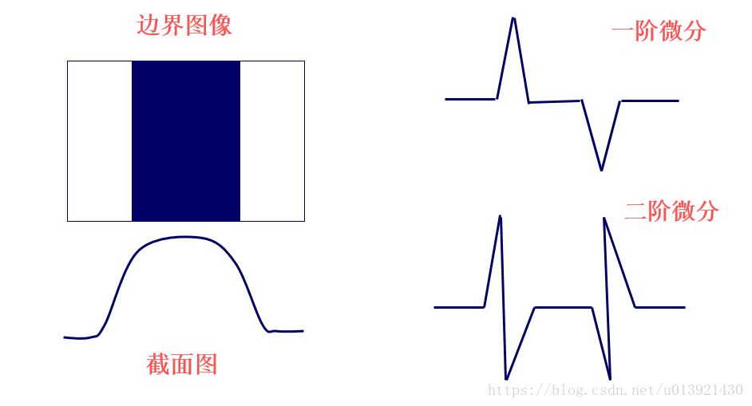

1.1 边缘检测
灰度图像边缘检测
图像的边缘区域会存在明显的像素值阶跃，因此边缘检测主要是通过获得图像灰度梯度，进而通过梯度大小和变化来判断图像边缘的。

或者二阶差分对边缘区域进行判断:
其中一阶差分可以判断边缘是否存在，二阶差分还可以根据正负号判断像素点在图像边缘亮的一侧还是暗的一侧。
其他的边缘检测方法还包括一些梯度算子，例如Prewitt算子、Sobel算子，Canny算子，LOG边缘检测算子等，在此不做说明。
彩色图像边缘检测
彩色图像的每个像素包含红绿蓝三个分量，这样每个像素可以由一个三维向量来表示。但是在进行图像边缘检测的时候，我们遇到一个问题，那就是向量并不存在梯度概念。单独对每个颜色分量进行边缘检测，其梯度不能反映图像整体彩色的差异变化。
一个广为使用的彩色图像梯度方法来自Zenzo[1986]的论文
其中$R,G,B$是图像分量，$\vec{r}, \vec{g}, \vec{b}$等是单位向量，表征颜色分量坐标。然后继续计算有:
注意这里执行的是向量乘法，而不是进一步求导。梯度方向为：
由梯度方向才能计算梯度:
matlab上自带的edge函数目前没发现可以对彩色图像直接进行边缘检测的方法，C++的openCV库也没有发现。上述工具一般会对彩色图像进行灰度化再执行边缘检测，效果也不算差。
1.2 边缘检测
【待补充】